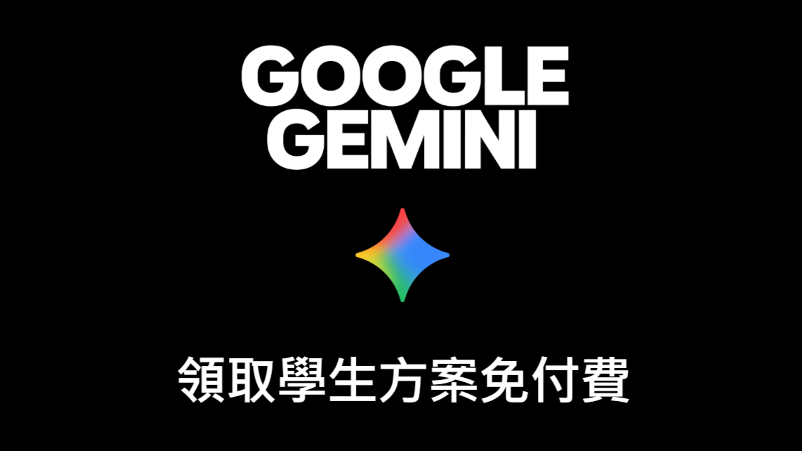

ETtoday｜Gemini 學生免費方案：Google AI Plus 與 400GB 儲存空間免費一年

一句話摘要
Google 推出 Gemini 學生免費方案，符合資格的學生可免費使用 Google AI Plus 一年，包含 400GB 儲存空間與多項 AI 學習工具，但申請需提供有效付款方式，免費期結束前未取消會自動續訂。
為什麼保存
這是與 AI 工具訂閱、學生優惠與教育應用直接相關的資訊。對課程設計、學生 AI 工具導入、學習輔助工具推薦，以及提醒學生注意訂閱續費風險都有保存價值。
方案重點
- 方案：Gemini 學生免費方案／Google AI Plus 免費一年。
- 對象：符合資格的學生；實際資格依 Google 官方優惠條款為準。
- 兌換期限：2026 年 12 月 31 日。
- 儲存空間：包含 400GB Google 儲存空間。
- 使用額度：一年免費期間享有較高的 Gemini 使用量上限。
- 續訂價格：若免費期結束前未取消，將自動以每月 NT$165 續訂 Google AI Plus。
- 申請注意：需要提供有效付款方式。
可用 AI 學習功能
- 學生專區、學習筆記本。
- 個人化測驗與成效追蹤。
- 上傳課堂教材與筆記，請 Gemini 整理研讀指南或製作練習題。
- Deep Research。
- Gemini Live。
- 互動式圖表。
- 圖片與影片生成。
教學與導入觀察
- 適合提醒學生把 Gemini 作為課堂筆記整理、題目練習與研究輔助工具，而不是只當聊天機器人。
- 400GB 儲存空間可降低學生整理教材、檔案與雲端資料的門檻。
- 因為需要付款方式且會自動續訂，若在課堂或工作坊推薦，應一併提醒「設定取消提醒」。
原文重點摘錄
- 記者吳立言／綜合報導
- Google 宣布推出 Gemini 學生免費方案，符合資格的學生可免費使用 Google AI Plus 一年（ 點我前往 ），除了提高 Gemini 使用額度，也包含 400GB 儲存空間及多項 AI 學習工具，優惠兌換期限至 2026 年 12 月 31 日。
- Google 官方頁面指出，學生方案提供學生專區、學習筆記本、個人化測驗、成效追蹤等功能，學生也能上傳課堂教材與筆記，利用 Gemini 整理研讀指南、製作練習題或進行 Deep Research。
- 方案同時包含 Gemini Live、互動式圖表、圖片與影片生成等功能，並提供 400GB Google 儲存空間 。官方也特別強調，學生可在一年免費期間享有較高的使用量上限。
- ★免費一年但記得取消
- 這項優惠僅限符合資格的學生，申請時必須提供有效付款方式。官方提醒，若學生未在免費期結束前取消方案，期滿後將自動以 每月 165 元 的價格續訂 Google AI Plus。
- 目前學生方案的兌換期限為 2026 年 12 月 31 日，實際申請資格與適用條件仍須依 Google 公布的優惠條款為準。